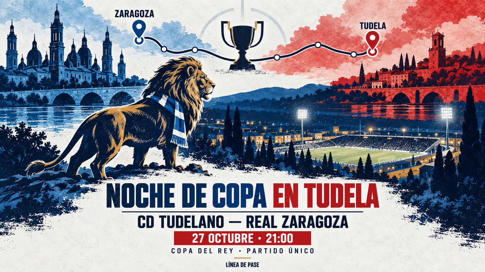
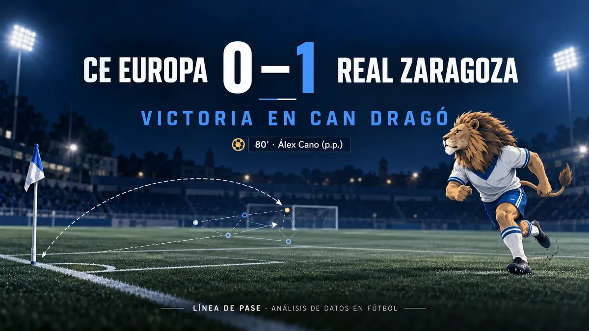
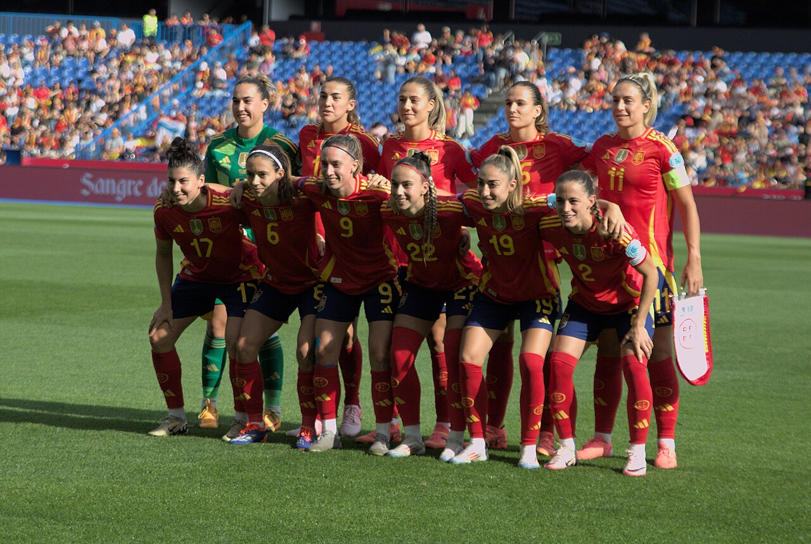

Copa del Rey · 27 de octubre · 21:00
Noche de Copa en Tudela: competir y avanzar
CD Tudelano–Real Zaragoza: horario, televisión y cuatro claves para seguir el partido único.

Línea de pase · Fútbol y datos
Partidos, protagonistas y contexto para entender el fútbol con datos.
Por Ángel Marqueta Alonso
Copa del Rey · 27 de octubre · 21:00
CD Tudelano–Real Zaragoza: horario, televisión y cuatro claves para seguir el partido único.

Último partido de liga · Jornada 9
El Zaragoza dominó la posesión y la circulación en Can Dragó, pero apenas se distanció en remates; lo resolvió un córner en el minuto 80.
23/10/2026 · Temporada 2026/27


Investigación · Liga F 2023/24
Graham Hansen encabeza el estudio de amenaza esperada. El análisis explica qué mide el xT y qué queda fuera del número.
Leer «El peligro empieza antes del último pase» →
Fútbol femenino · Territorio
¿Dónde empezar un programa de iniciación? Un análisis de licencias y población, con mapa y criterios para elegir.
Ver la propuesta →

Quién está detrás
Tres proyectos de Ángel Marqueta: las preguntas, el método y lo que se puede concluir.
Goles de los partidos de liga del Zaragoza según el minuto en que llegaron.
.jpg){kind=link}